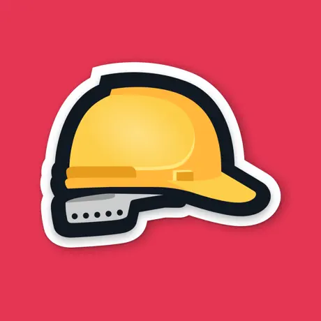
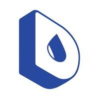
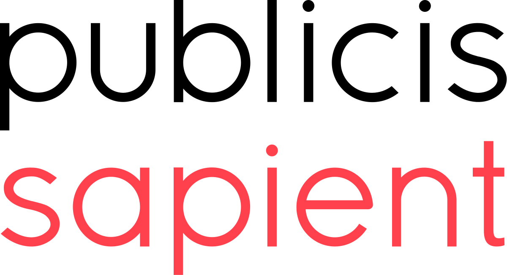

About Me
Hello! I'm Bartosz Kraszewski, a seasoned mobile full-stack developer with 13 years of experience in the
tech industry. Over the years, I've honed my skills in both front-end and back-end development,
specializing in creating robust and scalable mobile applications.
My expertise lies in using Flutter to build cross-platform mobile apps and integrating them seamlessly
with powerful back-end services using Firebase and Node.js. I'm also well-versed in cloud technologies,
ensuring that the apps I develop are not only functional but also secure and efficient.
I firmly believe in the principles of Test-Driven Development (TDD) and make it a point to incorporate
unit testing in all my projects. This approach helps me deliver high-quality code and ensures that the
apps perform reliably under various conditions.
Skills
- Flutter
- Dart
- Android
- iOS
- Firebase
- Node.js
- Typescript
- Java
- Kotlin
In addition to my professional pursuits, I'm also an amateur squash player, which keeps me active and
provides a great balance to my coding life.
I am always excited to take on new challenges and look forward to collaborating with clients who are
passionate about bringing innovative mobile app solutions to life.
Latest Projects
Klar (Sep 2022 - Jul 2024)
Role: Senior Flutter Engineer
- As a member of the credit team at Klar, a pioneering fintech bringing modern banking solutions
to
Mexico.
- I was responsible for the product repayment module.
- My role involved developing and optimizing
repayment features to ensure seamless and efficient user experiences.
- Implemented multiple general-use components available for other teams including file
downloading, pdf
browsing and payment status monitoring
- Contributed to Klar Design System - widget library following Klar Visual Identity guide

Planflow (Oct 2023 - June 2024)
Role: Senior Flutter Engineer
- Contributed to the development of a construction schedule management app for a startup:
- Implemented a new state management architecture, enhancing app stability and performance.
- Expanded test coverage by 800 tests, significantly improving code reliability.
- Developed new functionalities for scheduling, daily tasks, and issue tracking.
- Integrated the app with a push notifications framework to improve user engagement.

Dropsource (May 2022 - Aug 2023)
Role: Senior FullStack Mobile Engineer
- Helped implement the UI of Monarch - an open-source
tool for Flutter developers. Also contributed to the samples repository.
- Implemented 12 Fixes - a 12-week wellness plan.
Created the UI and Firebase backend for progress tracking and group challenges.
- Developed the app and Firebase backend for the Hideout
app - a digital platform designed to provide a private, algorithm-free space for users to
document, organize, and share their thoughts and media, fostering a mindful and personal
approach to technology use.

Publicis Sapient (May 2021 - May 2022)
Role: Senior Flutter Engineer
- Built digital neobank from scratch in less than one year!
- Led the team responsible for user registration and onboarding.
- Designed and implemented a seamless user onboarding journey.
- Integrated the OnFido SDK to ensure a secure KYC process.
- Contributed to the development of a reusable component base utilized by multiple teams.
It's just a fraction of my professional experience, to see more, see My Resume
Resume
You can download my full resume in PDF format for a comprehensive overview of my experience and skills.
Download Resume